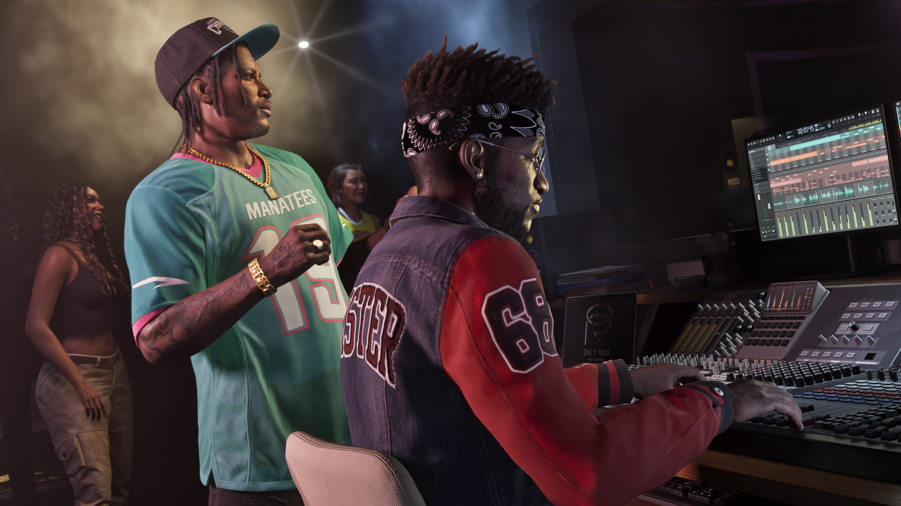
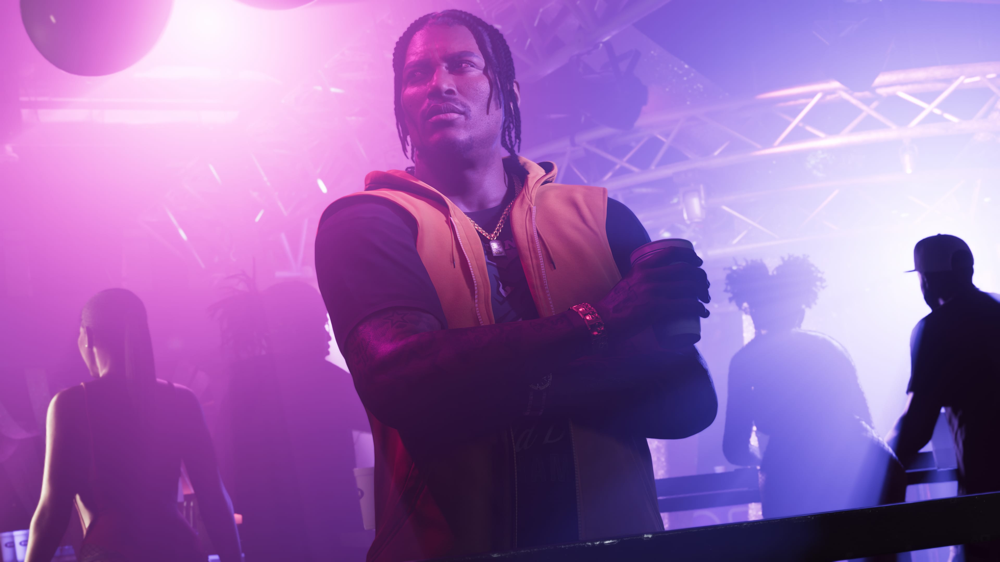
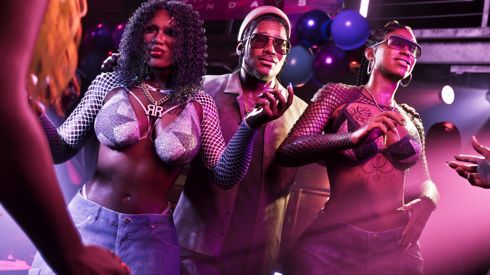

Boobie Ike
Boobie é parceiro de Dre'Quan na Only Raw Records e uma das figuras fundamentais para o desenvolvimento de seus planos na indústria musical.
Conhecer Boobie
Dre'Quan Priest é um personagem de Grand Theft Auto VI determinado a conquistar espaço na indústria musical de Vice City.
Ligado a Boobie Ike e à Only Raw Records, Dre'Quan enxerga a música como seu verdadeiro caminho e busca transformar a gravadora em um nome importante na cidade.
Dre'Quan sempre teve como objetivo entrar para a indústria musical.
Mesmo durante o período em que precisava vender nas ruas para sobreviver, sua ambição estava voltada para a música e para a possibilidade de construir algo maior dentro desse mercado.
Essa trajetória acabou aproximando Dre'Quan de Boobie Ike, empresário e figura conhecida de Vice City.
A parceria entre os dois se tornou uma das bases da Only Raw Records e coloca Dre'Quan diretamente no núcleo musical apresentado para GTA VI.

A música não aparece apenas como um negócio ocasional para Dre'Quan. Ela é apresentada como o objetivo que ele sempre perseguiu.
Antes de consolidar sua posição na Only Raw Records, Dre'Quan chegou a trabalhar agendando artistas para o clube de Boobie Ike.
Essa ligação com a vida noturna e com artistas de Vice City ajudou a colocá-lo dentro do ambiente no qual pretende construir sua carreira.
Agora, com uma gravadora e uma parceria estabelecida, o desafio passa a ser encontrar o sucesso capaz de colocar a Only Raw Records em evidência.

A Only Raw Records representa a principal oportunidade de Dre'Quan para transformar sua ambição musical em um negócio de maior alcance.
Boobie Ike é seu parceiro nesse projeto e demonstra estar especialmente investido no sucesso da gravadora.
Dre'Quan também já conseguiu contratar a dupla Real Dimez, formada por Bae-Luxe e Roxy.
A conexão entre Dre'Quan, Boobie e Real Dimez forma um dos núcleos mais claros da cena musical e da vida noturna de Vice City apresentados até agora.

Personagens diretamente conectados ao núcleo musical de Dre'Quan Priest em Grand Theft Auto VI.
Boobie é parceiro de Dre'Quan na Only Raw Records e uma das figuras fundamentais para o desenvolvimento de seus planos na indústria musical.
Conhecer BoobieBae-Luxe e Roxy formam a Real Dimez. A dupla está ligada à Only Raw Records após ser contratada por Dre'Quan.
Conhecer Real DimezImagens oficiais de Dre'Quan Priest divulgadas para Grand Theft Auto VI.
Somente informações apresentadas oficialmente para o personagem.
Entrar na indústria musical sempre foi o objetivo de Dre'Quan.
Dre'Quan possui uma parceria de negócios com Boobie Ike.
Dre'Quan está diretamente ligado à gravadora Only Raw Records.
Dre'Quan trabalhou agendando artistas para o clube de Boobie.
Dre'Quan contratou a dupla Real Dimez para a Only Raw Records.
Seu núcleo está ligado à cena musical e à vida noturna de Vice City.
As informações desta página são baseadas em materiais oficiais publicados pela Rockstar Games.
Página oficial de GTA VI com informações sobre os personagens e o estado de Leonida.
Rockstar GamesApresentação oficial de Dre'Quan Priest, Boobie Ike e do núcleo musical de Vice City.
Ver fonte oficial